Process
1. Research of Quantified Self
In this course we got our subject domain: quantified self. Mind map was used to understand this subject, and what potential design direction could we lead to. After some literature research and brainstorming, three main categories under quantified self were identified. Firstly, the physiological data including hearing rate, calories burnt, weight, etc. These data were mostly numeric numbers that told one’s health, or performance of athletes. The second category included one’s emotion data such as level of happiness, sadness and stressfulness. This category of data were mainly self ratings and descriptions that could help assess patients, help prisoners keep mentally health, or help to play the right music according to one’s mood. The third category of data were a new category we called ‘personal data’ which has wide range of variety such as the dress code of everyday dress, the number of people met everyday, personal log of self-awareness and self-improvement, and one’s physical path.
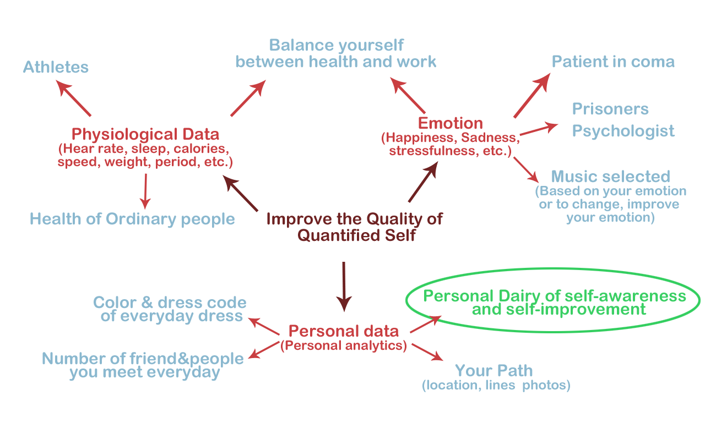Mind mapping around "quantified self"
2. Collecting and analysing data
2.1 Collecting data from user
Once fully understand the scope of quantified self, we chose to focus on one’s self-awareness and self-improvements in the third category - personal data. Through brainstorming, we generated some possible problems people might face under this category such as work-life unbalance, stress, self-criticism.
To test our assumptions and get a better understanding of the problem, we conducted 3 interviews and an online survey of 67 people. As we found out through the initial 3 interviews that the problems we assumed were topics that participants felt a bit awkward to talk about, survey was used as our main method to collect data.
Survey results
2.2 Analysing data and creating persona
Four most important behavioural variables were identified through the survey data, namely
1) How I feel that I manage my different roles;
2) How much effort I spend on it;
3) When I think about my different roles;
4) Where I think about them.
The four variables helped us find behavioural patterns among the participants(see the figure below), and three personas were created based on it.
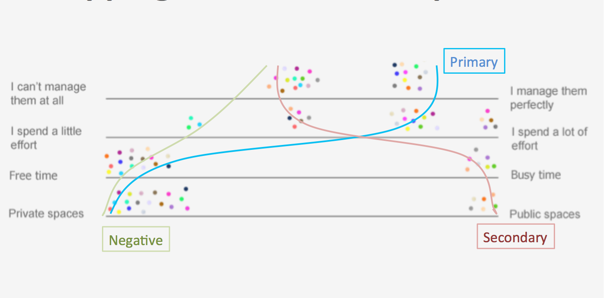Finding behavioural patterns from the survey data
A primary persona, which represented our target user; a secondary persona, which represented a relevant user who has additional needs that could be mainly satisfied within the design for the primary persona; and a negative persona, which represented the nonusers we would not designed for; were created. Three personas provided a clear way to share understandings of the potential users.
Story board
To empathy user, Cooper’s method of “role play” was used within the team member to “act” as target users and “experience” their problems. The photos were used to create the storyboards. And the storyboards clearly depicted when, why and how the future design would be used.
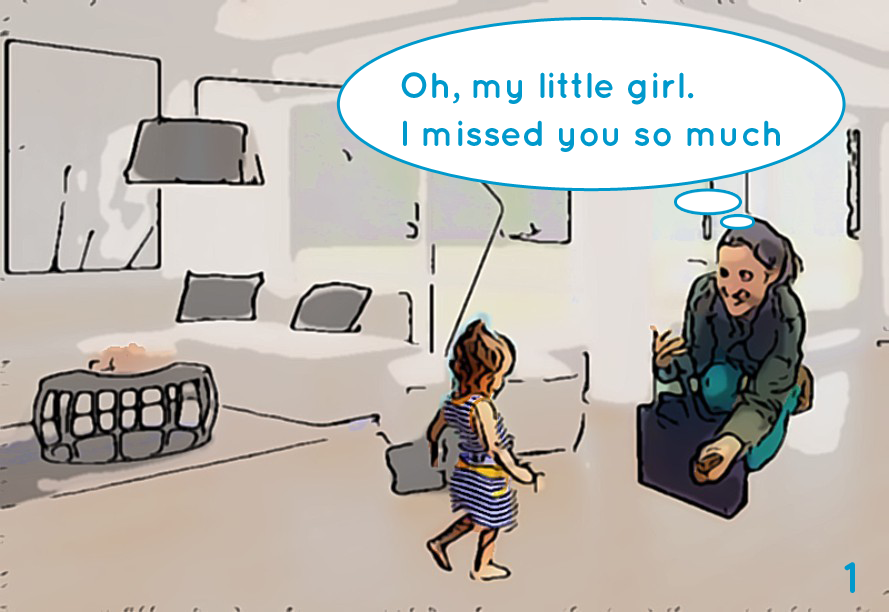Story board 1-1
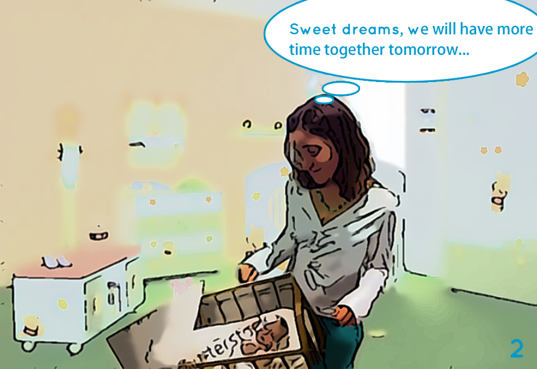Story board 1-2
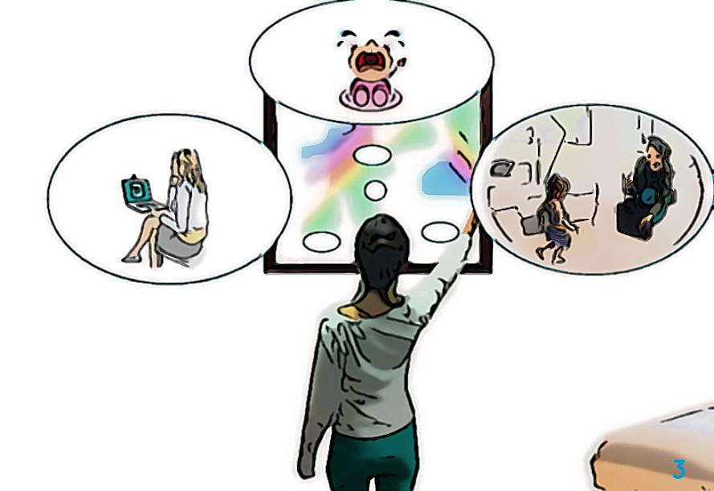Story board 1-3
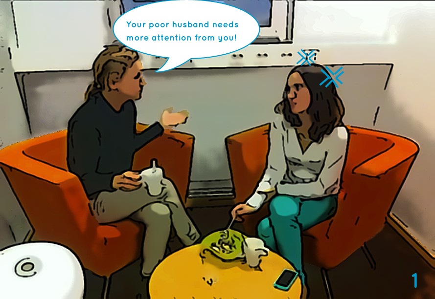Story board 2-1
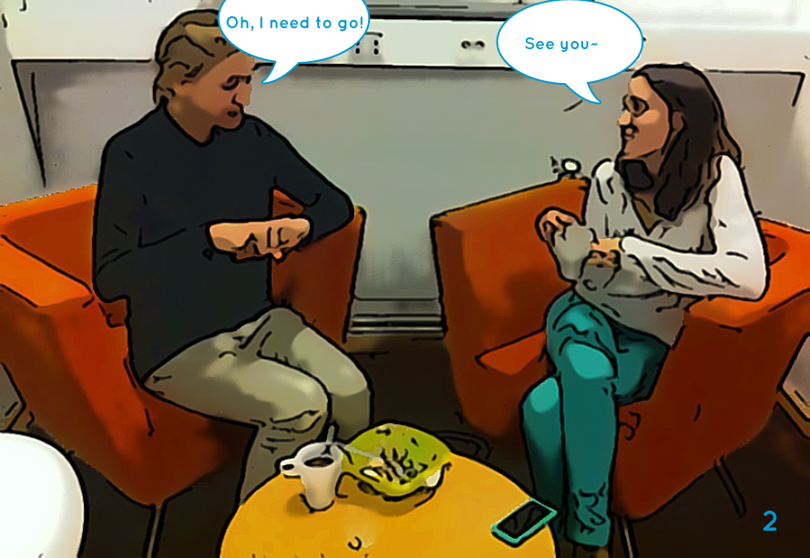Story board 2-2
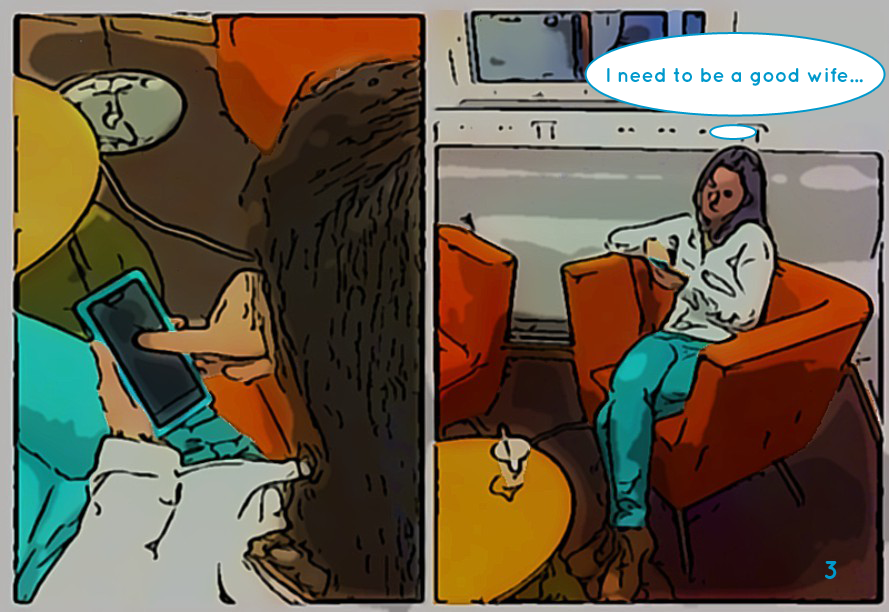Story board 2-3
3. Iterative of Prototyping and Testings
3.1 Sketch, Low-fi Prototype and Testing
We sketched individually and shared our different design ideas first. During this process, we agreed to free our imagination and not necessarily considering the limitation of technology. A bunch of interesting ideas were generated: Growing tree, Life-beverage, Stress release bubbles, etc.
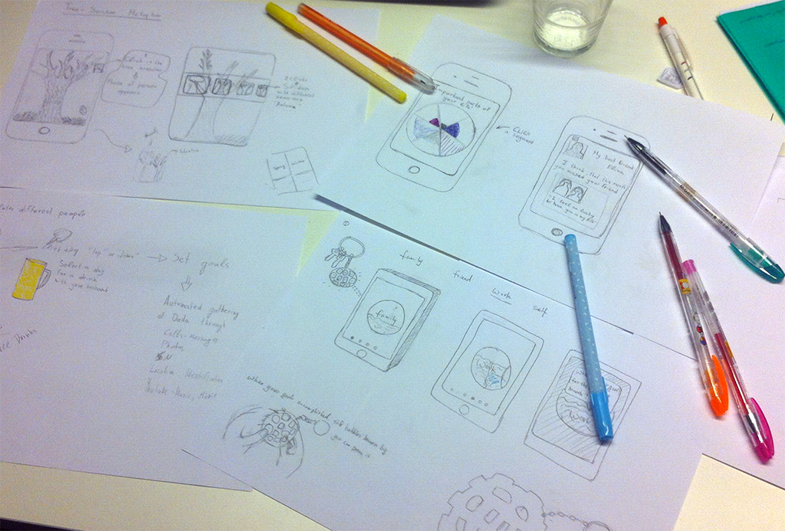Examples of sketches
Finally we decided to combine the idea of growing tree app and the physical interactive tree installation as our initial design concept - LifeTree. A low-fi interactive prototype were then created using pencil and paper, and POP App and to facilitate the abstract representation of one’s life states. Four informal testings were carried out to see how user understand the tree metaphor of one’s life. Two tasks were designed: 1) Set a goal to improve your relationship with your friend Tim; 2) To check if you are good with your friend Elina.
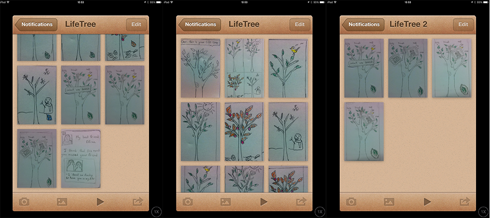Low-fi prototype using POP
Through the four informal evaluations we found out that the tree metaphor were a understood by users while they got different interpretations of it according to their own life states. On the other hand we observed that users were not comfortable to interact with the low-fi prototype as it looked so undeveloped. The limited functioned prototype was sufficient enough to valid our concept, while a video prototype might be more suitable so that users won’t be afraid to break the prototype.
3.2 Hi-fi Prototype and Testing
Photoshop and Invision App were used to design a hi-fi interface and an App-like interactive prototype that could run on iPhones. With the hi-fi prototype, two rounds of cooperative evaluations were carried out with two secretaries representing our primary users and two Master students representing our secondary users. The participants were asked to first explore the application and think aloud. And then a scenario and several tasks were given to the them to identify problems in usability and information structures. After one round of testing, we made changes on the interface accordingly and validated our changes in the second round of testing. Each testing was ended with a debriefing interview.
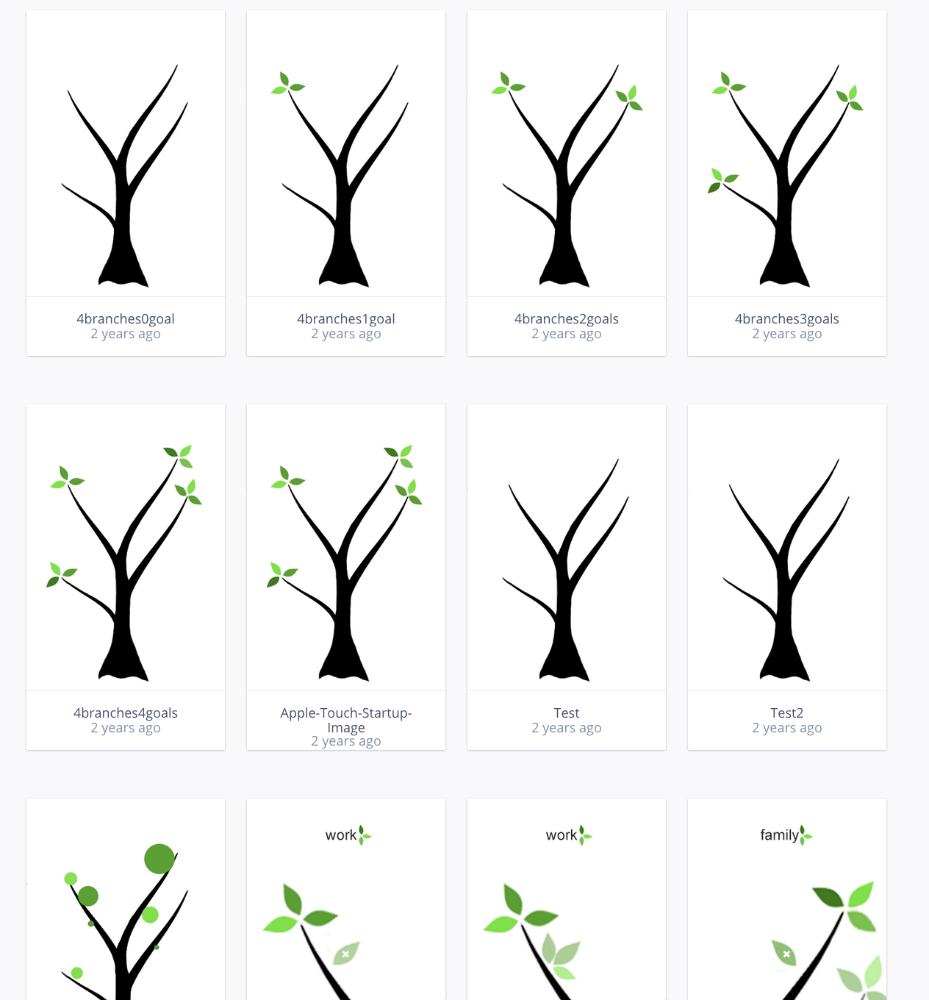Making hifi prototype
3.3 Observation and Interview of the Usage of the Physical “tree”
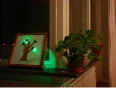Phycial prototype and video demo
Apart from the development and testings of the mobile App, a physical tree installation was made with cardboard, green LED lights and Arduino board. And the three day long test was conducted with one potential user. The user placed the tree in his living room and used the hi-fi prototype we created. Using Wizard of Oz, we faked the connection of the physical tree with the mobile App and manually turned on a light when we knew that he had achieved one goal. We also conducted a follow-up interview with the user and found out that he enjoyed the physical tree very much, and became happily surprised every time when he saw a lights turned on. Moreover, we found that participants preferred the physical installation more than the mobile App as a medium during the phase he was achieving his goals.
LifeTreeDemo from Weiwei Zhang on Vimeo.
4. Reflection and Future Work
Quantified self could be seen from different aspects and we chose an area that was less explored then, and even now. Different from the visualisation of numeric personal health data, the abstract metaphor were used and tested to present one’s personal wellbeing in terms of self-awareness, life balance and personal relationships. In this project we took a participatory approach, enabling input and feedback from potential users to influence and validate our design decisions.
In the LifeTree project, we explored the area of self- awareness and self-improvements under the scope of quantified self. Role playing was used with brainstorming to identify the problems in the area. Interviews and surveys were applied to collect data, identify behavioural variables and build personas. Storyboards were then created as a communication tool in the design team. Afterwards, paper prototype was tested in an informal evaluation with focus on validating the tree metaphor which would be used in the mobile application. Based on that, an interactive prototype was built and usability problems of the UI were evaluated and fixed in two rounds of cooperative evaluation. Meantime, a three day long evaluation of the effect of the physical artifact was carried out with one potential user using the “Wizard of Oz” method and suggestions for improvements were derived. In order to validate the effectiveness of the physical artefact, more evaluation should be conducted in the future.
-- Thanks for reading --
If you have any questions or simply want to chat with me about this project, feel free to drop me an email.